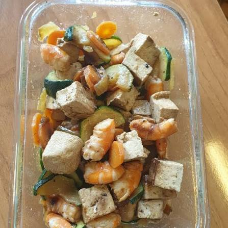

Tofu Salteado con Verduras

El tofu salteado con verduras es una receta vegetariana rica en proteínas vegetales, vitaminas y minerales. Su preparación es rápida y versátil, convirtiéndolo en una excelente opción para quienes buscan una comida saludable, ligera y llena de sabor.